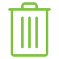

|  |
Please use the general waste and recycling bins at the end of the kitchen or by the printer. |
|
Much like Australia's chances of winning the Ashes this year, the washing-up fairy does not exist.
Please wash your items once you have finished with them! |
|
Please remember that this is a shared space and to keep the building spick and span! |